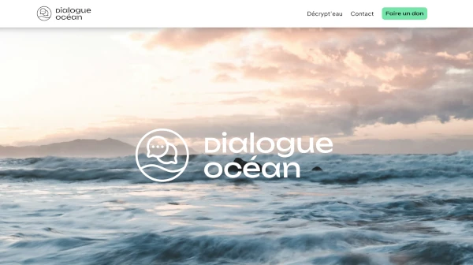

Dialogue Océan rassemble les collectivités locales, les scientifiques, les usagers et les acteurs économiques du Pays basque afin de favoriser le dialogue et d'accélérer la transition écologique du littoral basque.
Détails
Site web Wordpress avec thème Divi 5